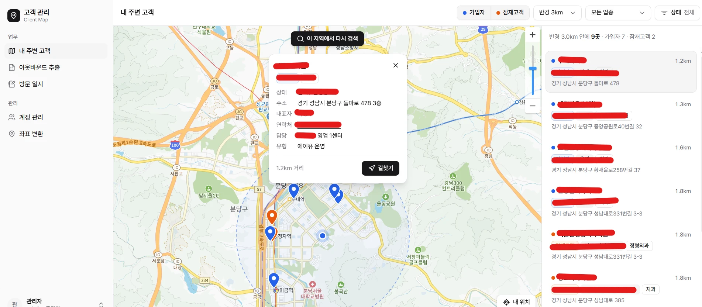

영업 효율화 및 전략 데이터 추출 시스템
기간 입력
- 팀
- 입력
- 역할
- 입력
- 기술
- 입력
영업 담당자가 지금 있는 곳 주변의 고객사를 지도에서 찾고, 상태와 방문 히스토리를 바로 확인하는 사내 고객 관리 서비스입니다.
배경
영업 담당자는 신규·기존 고객사를 방문한 김에 근처의 기존 고객사도 관리차 들르고 싶어 했습니다. 하지만 고객사를 각자 네이버 지도에 직접 등록해 두고 위치를 확인하고 있었습니다.
내가 한 일
- 현재 위치 기준 반경 안의 고객사를 지도와 목록으로 보여주는 웹 서비스 개발
- 가입자·잠재고객, 업종, 진행 상태로 고객사를 거르는 필터
- 주소를 좌표로 바꾸는 변환, 아웃바운드 대상 추출, 방문 일지 기능 추가
성과
수동 등록 → 자동 조회
- 개인별 네이버 지도 관리를 전사 공용 고객 지도로 전환
- 외근 중에도 고객사 정보, 담당자, 히스토리를 바로 확인
